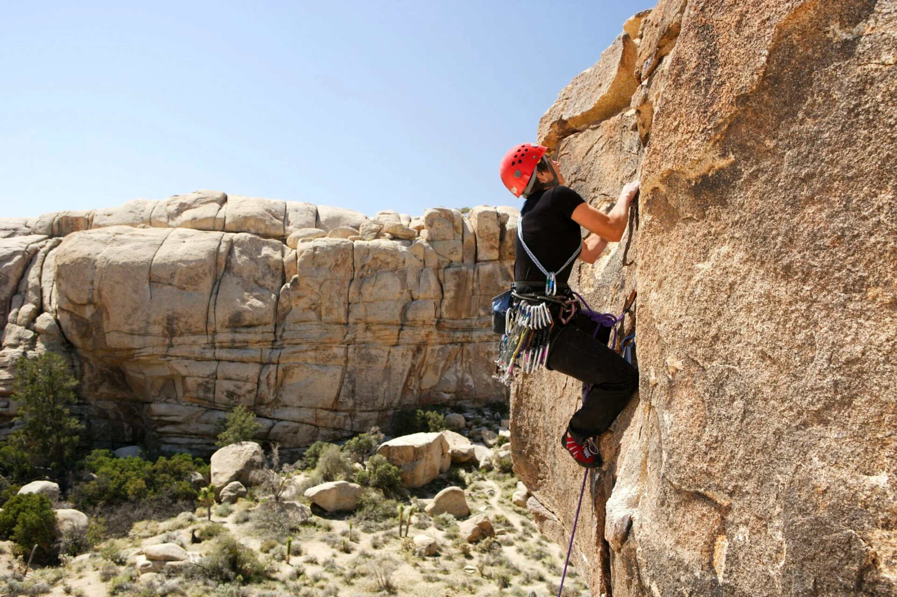

What is Traditonal Bouldering?
Tradtional Rock climbing is a fundamental form of rock climbing that emphasizes self-sufficiency, adventure, and the use of natural features for both progress and protection.
Unlike sport climbing, which relies on pre-installed bolts, trad climbers place removable protection in the rock as they ascend and remove it as they descend or are followed by a second climber. This places a greater emphasis on technical skill, mental fortitude, and route-finding ability.